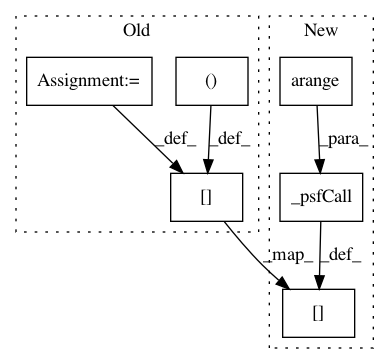

4b8dec5e7199ad302c52bf9eb6914a170491334c,acoular/fbeamform.py,PointSpreadFunction,_get_psf,#PointSpreadFunction#,801
Before Change
r0 = self.r0
rm = self.rm
kj = array(2j*pi*self.freq/self.c)[newaxis]
steerVecFormulation = steerVecTranslation(self.steer)
if self.calcmode == "single":
for ind in g_ind_calc:
ac[:,ind] = calcPointSpreadFunction(steerVecFormulation, (r0, rm, kj, [ind]), self.precision)[0,:,0]
gp[ind] = True
elif self.calcmode == "full":
gp[:] = True
ac[:] = calcPointSpreadFunction(steerVecFormulation, (r0, rm, kj, arange(r0.shape[0])), self.precision)[0,:,:]
else: // "block"
hh = calcPointSpreadFunction(steerVecFormulation, (r0, rm, kj, g_ind_calc), self.precision)
indh = 0
After Change
gp[ind] = True
elif self.calcmode == "full":
gp[:] = True
ac[:] = self.steer_obj._psfCall(freqInd, arange(self.steer_obj.grid.size), self.precision)[0,:,:]
else: // "block"
hh = self.steer_obj._psfCall(freqInd, g_ind_calc, self.precision)
indh = 0
In pattern: SUPERPATTERN
Frequency: 3
Non-data size: 6
Instances
Project Name: acoular/acoular
Commit Name: 4b8dec5e7199ad302c52bf9eb6914a170491334c
Time: 2018-05-03
Author: tom.j.gensch@campus.tu-berlin.de
File Name: acoular/fbeamform.py
Class Name: PointSpreadFunction
Method Name: _get_psf
Project Name: acoular/acoular
Commit Name: 276f8fc3fe9a7424bae6585ed4453190e2a70815
Time: 2018-05-02
Author: tom.j.gensch@campus.tu-berlin.de
File Name: acoular/fbeamform.py
Class Name: PointSpreadFunction
Method Name: _get_psf
Project Name: acoular/acoular
Commit Name: 6e92fe2e535fcd1d9fa8f0e0ea080047c5a73067
Time: 2018-12-18
Author: gejohe@web.de
File Name: acoular/fbeamform.py
Class Name: PointSpreadFunction
Method Name: _get_psf